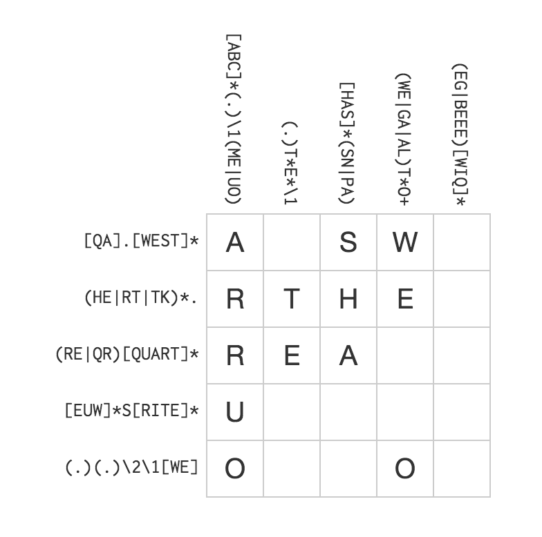

Regex 101
Henry Marshall (@henry)
2018-04-09
Simple String Replacement
It would be grand if grandma came over!
%s/grand/super/
It would be super if superma came over!
A Work Around
It would be grand if grandma came over!
%s/ grand / super /
It would be super if grandma came over!
Your First Regex
It would be grand if grandma came over!
If grandma came over that would be grand!
%s/grand\b/super/
It would be super if grandma came over!
If grandma came over that would be super!
What Happened
\b matches the boundary between a letter, number, or underscore and anything else.
/foo\b/
Matches:
foo.
foo()
foo-
foo bar
foo
Does not Match:
foobar
foo1
foo_
Character Class
My grandma has a cat. My grandpa has a dog.
%s/grand[mp]a/family/
My family has a cat. My family has a dog.
Shorthand Character Class
| Shorthand | Equivalent |
|---|---|
[0-9] |
[0123456789] |
\d |
[0-9] |
\s |
[ \t\n\r] |
\w |
[\A-Za-z\d_] |
Negation
Negate a character class by prepending ^
const isNotVowel = str => /[^aeiou]/.test(str)
| Shorthand | Equivalent |
|---|---|
\D |
[^\d] |
\S |
[^\s] |
\W |
[^\w] |
Metacharacters
There are 12 characters with a special meaning:
\ ^ $ . | ? * + ( ) [ {
Metacharacters are context dependent.
To match a literal character, escape it with a backslash
\$.In character classes, usually treated literally
Checking Uptime
const isFiveNines = str => /99\.999/.test(str)
const goodUptime = "99.99939"
isFiveNines(goodUptime) // true
const badUptime = "93.990999"
isFiveNines(badUptime) // false
In practice you should be comparing floats.
Incorrect Regex Fail Silently (usually)
const isFiveNines = str => /99.999/.test(str)
const badUptime = "93.990999"
isFiveNines(terribleUptime) // true - oh no!
The . matches any one character in regex (with the exception of \n).
Repeating Characters
| Pattern | Description | Matches |
|---|---|---|
| a? | One or Zero 'a' | '' 'a' |
| a* | Zero or More 'a' | '' 'a' 'aa' 'aaa' 'aaaa'... |
| a+ | One or More 'a' | 'a' 'aa' 'aaa' 'aaaa'... |
| a{3} | Exactly three 'a' | 'aaa' |
| a{2,4} | Two to four 'a' | 'aa' 'aaaa' 'aaaa' |
Matching Account IDs
const isChargeId = str => /acct_[a-zA-Z0-9]{16,}/.test(str)
Groups
Treating a sequence as a single atomic unit.
const isTheme = str => /(na)+ batman/i.test(str)
isTheme("nanananananana Batman!") // true
Alternation in Groups
My brother has a cat. My sister has a dog.
%s/(brother|sister)/family/
My family has a cat. My family has a dog.
Capture Groups
const str = "Sticker pricing is 2.9% + $0.30 per transaction"
const getPercentage = str.match(/(100|\d{1,2}(?:\.\d+)?)%/)
getPercentage(str)[1] // "2.9"
Backreferences
My brother has a goldfish.
%s/(brother|sister)/step-\1/
My step-brother has a goldfish.
Matching Email Addresses
/^[A-Z0-9._%+-]+@[A-Z0-9.-]+\.[A-Z]{2,}$/i
| Section | Meaning |
|---|---|
^ |
Start of the line |
[A-Z0-9._%+-]+ |
1+ of: letter, number, ., _, %, +, - |
@ |
Literal @ |
[A-Z0-9.-]+ |
1+ of: letter, number, ., - |
\. |
Literal . |
[A-Z]{2,} |
Two or more letters |
$ |
End of the line |
i |
Case Insensitive |
Ruby Security Vulnerability!
reg = /^\w+(\+\w+)?@\w+\.\w{2,}$/
reg.match("foo bar")
# => nil
reg.match("foo@bar.com")
# => <MatchData "foo@bar.com" 1:nil>
reg.match("<script>alert('uh oh')</script>\nfoo@bar.com")
# => <MatchData "foo@bar.com" 1:nil>
Ruby Safe Regex
Use \A (start of string) and \z (end of string),
instead of ^ (start of line) and $ (end of line).
safeReg = /\A\w+(\+\w+)?@\w+\.\w{2,}\z/
reg.match("foo@bar.com")
# => <MatchData "foo@bar.com" 1:nil>
reg.match("<script>alert('uh oh')</script>\nfoo@bar.com")
# => nil
The linter has got your back.
Match only what you need
foo = 'foo: "foo"'
/"(.+)"/.match(config)[1] # => "foo"
foobar = 'foo: "foo", bar: "bar"'
/"(.+)"/.match(foobar)[1] # => "foo\", bar: \"bar"
/"([^"]+)"/.match(foobar)[1] # => "foo"
Matching All the Things!
extract_comment = /\/\*([\w\W]+)\*\//
contains_comment = "this.bit.is.code()
/* this is a comment
this too */
more.code()"
extract_comment.match(contains_comment)[1].strip
# => "this is a comment\nthis too"
This is what your syntax highlighter is doing!
Parsing HTML

Flavors of Regex
- Backreferences are by either:
$1 $2(Ruby, Rust, PHP, Java)\1 \2(Javascript, Python)%1 %2(Clojure)
- Basics are ~universal across languages
- Some advanced features vary (e.g., lookarounds, named references)
Use a library with Javascript
"bar baz".match(/ba\w/) // [ "bar", index: 0, input: "bar baz" ]
"bar baz".match(/ba(\w)/) // [ "bar", "r", index: 0 input "bar baz" ]
"bar baz".match(/ba\w/g) // [ "bar", "baz" ]
"bar baz".match(/ba(\w)/g) // [ "bar", "baz" ]
"bar baz".match(/foo/) // null
"bar baz".match(/foo/g) // null
// The "correct" way to capture globally.
var matches, output = [];
while (matches = /ba(\w)/.exec("bar baz")) {
output.push(matches[1]);
}
Next Steps
Regex Crosswords

Regex Golf

Resources
- Regular Expression Cookbook (safari)
- Introducing Regular Expressions (safari)
- Regular-Expressions.info reference guide.
- Rubular is a great way to play around with the Ruby regex engine in your browser. It's how I build all my non-trivial regex!
- Jeff Atwood's ode to regex if you still need convincing.
- Join #protip on Slack!